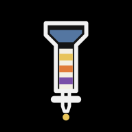

Polityka prywatności
Notatnik Syntez
Obowiązuje od 18 listopada 2026 r.
Notatnik Syntez nie zbiera, nie wysyła i nie udostępnia żadnych Twoich danych. Wszystko, co wpiszesz, zostaje tylko w Twoim telefonie.
1. Kto odpowiada za aplikację
Notatnik Syntez to bezpłatna, niekomercyjna aplikacja do prowadzenia cyfrowych notatek laboratoryjnych. Twórca jest osobą prywatną. Kontakt: kamilos.polaco@gmail.com.
2. Jakie dane zbieramy
Żadnych. Aplikacja nie wymaga konta ani logowania, nie zawiera reklam, nie używa narzędzi analitycznych ani śledzących i nie wysyła żadnych informacji do twórcy ani do innych firm.
3. Dane, które sam wpisujesz
Syntezy, odczynniki, notatki, płytki TLC, widma, zdjęcia i inne wpisy są zapisywane wyłącznie w pamięci aplikacji na Twoim urządzeniu. Nie trafiają na żaden serwer. Twórca nie ma do nich dostępu i nie może ich odczytać, odzyskać ani usunąć za Ciebie.
4. Aparat i zdjęcia
Aplikacja korzysta z aparatu lub galerii tylko wtedy, gdy sam dodajesz zdjęcie (np. płytki TLC albo widma) – przez systemowe okno wyboru pliku lub aparatu. Wybrane zdjęcie jest zapisywane wyłącznie na Twoim urządzeniu. Aplikacja nie ma dostępu do innych zdjęć ani do aparatu w tle.
5. Połączenie z internetem
Internet jest potrzebny tylko do pobrania samej aplikacji i jej aktualizacji. Pliki aplikacji są udostępniane przez serwis GitHub Pages (GitHub, Inc.). Jak każdy serwer stron internetowych, GitHub może przy tym technicznie zapisywać adres IP i podstawowe dane przeglądarki w celach bezpieczeństwa – zgodnie z polityką prywatności GitHub. Twórca aplikacji nie otrzymuje tych informacji. Twoje notatki nigdy nie są przy tym przesyłane.
Po pierwszym uruchomieniu aplikacja działa także bez internetu.
6. Usuwanie danych
Dane możesz usunąć w każdej chwili: kasując wpisy w aplikacji, czyszcząc dane aplikacji w ustawieniach telefonu albo odinstalowując aplikację. Usunięcie jest trwałe – twórca nie przechowuje żadnej kopii.
7. Dzieci
Aplikacja nie jest skierowana do dzieci i nie zbiera danych żadnych użytkowników, w tym dzieci.
8. Zmiany polityki
Jeśli polityka się zmieni, nowa wersja pojawi się na tej stronie razem z nową datą obowiązywania.
9. Kontakt
Pytania dotyczące prywatności: kamilos.polaco@gmail.com.
Privacy Policy – Notatnik Syntez
Effective 18 November 2026
Notatnik Syntez does not collect, transmit or share any of your data. Everything you enter stays on your device.
Who we are. Notatnik Syntez is a free, non-commercial app for keeping digital laboratory notes, made by a private individual. Contact: kamilos.polaco@gmail.com.
Data collected. None. No account or sign-in, no ads, no analytics or tracking, and nothing is sent to the developer or to third parties.
Your entries. Syntheses, reagents, notes, TLC plates, spectra, photos and other entries are stored only in the app's local storage on your device. They are never uploaded to any server, and the developer cannot access them.
Camera and photos. The camera or photo picker is used only when you choose to add a photo, through the system file or camera dialog. The selected photo is stored only on your device. The app has no background access to your camera or other photos.
Internet. An internet connection is used only to download the app and its updates, which are served by GitHub Pages (GitHub, Inc.). Like any web host, GitHub may technically log IP addresses and basic browser information for security purposes under the GitHub Privacy Statement; the developer does not receive this information. Your notes are never transmitted. After the first launch the app also works offline.
Deleting data. You can delete your data at any time by removing entries in the app, clearing the app's data in your phone settings, or uninstalling the app. Deletion is permanent; the developer keeps no copies.
Children. The app is not directed at children and collects no data from anyone, including children.
Changes. Any changes to this policy will be posted on this page with a new effective date.
Notatnik Syntez · aplikacja niekomercyjna · otwórz aplikację